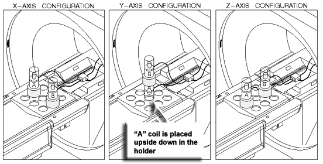

- 00000018WIA30837E20GYZ
- id_131068793.0
- Aug 29, 2019 1:36:26 AM
Equipment Setup and Prescan Checks
Prerequisites
| Required persons | Preliminary requirements | Procedure | Finalization |
|---|---|---|---|
| 1 | Not Applicable | 3 to 6 hours | Not Applicable |
| Item | Quantity | Effectivity | Part number | Manufacturer |
|---|---|---|---|---|
| Rotary Attenuator (10 dB/step) | 1 | - |
46-255838P2 | - |
| One of the following Grafidy kits | 1 | - |
46-271417G1 - 1.5T 46-307164G1 - 1.5T 46-307164G2 - 1.5T 46-307164G3 - 1.0T, 1.5T 46-307164G4 - 1.0T, 1.5T | - |
| ||||
| Condition | Reference | Effectivity |
|---|---|---|
| - | - | |
| - | - | |
| - | - |
About this task
Grafidy 3 will take 3 hours if running a full procedure on a BRM and 6 hours if running the full procedure on a TwinSpeed doing WHOLE and ZOOM.
Set Up Grafidy Kit for First Axis Calibration
Procedure
- Place the coil baseplate on the cradle, and configure the Grafidy
coil/samples and collars appropriately for the first axis on which
Grafidy will be performed. (See the Figure 1.)
Figure 1. Grafidy Phantom Configurations 
Note:In the X and Z configurations, the coil/sample is placed with the sample at the top. In the Y configuration, the top coil/sample is placed with the sample on top, while the lower coil/sample is inverted so that the sample is on the bottom. Also in the Y configuration, no collars are used beneath the bottom sample.
To complete Step 4 through Step 10, refer to for Figure 2.
Figure 2. Grafidy Kit Setup 
- Place the power switch for the Pin Diode Drive Test Box in the
On position (referred to as 1).
-
RFS Cabinets: Install a rotary step attenuator set to 20 dB in series with the cable connected to J14 (RF Input) on the back of the RF Amplifier.
-
RF/PDU (SRFD), SRF and SRF2 Cabinets: Install a rotary step attenuator set to 20 dB between J1 on the rear of the System Cabinet (exciter output) by disconnecting the cable at J1 on the back of the RF Cabinet and installing the attenuator between the cable and J1.
Note:An alternative is to use J14 on the fiber optic bracket at the rear of the RF Amplifier. (See Figure 3.)
Figure 3. SRF and SRF2 Attenuator Points 
-
RF/PDU (SRFD): Although envelope feedback is not employed on the RF/PDU Cabinet, attenuation is still required. Install a rotary step attenuator set to 20 dB in series with the cable connected to J14 RF INPUT on the front of the RFI module.
-
Prescan Checks
Procedure
- Select Window and Two Windows from the Window menu. On the double window two peaks will display
that should be approximately the same amplitude within 50%. (See Figure 4.)
Figure 4. Typical Grafidy Prescan 
Finalization
Finalization
No finalization steps.